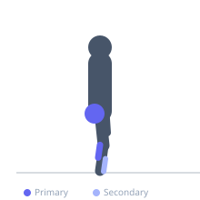
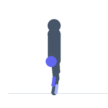

Exercise guide / Single-Leg Balance
Single-Leg Balance
Single-leg balance is a foundational proprioception and balance rehabilitation exercise. Standing on one leg challenges the ankle stabilizers, peroneals, gluteus medius, and the entire proprioceptive chain from foot to hip. It is a standard initial exercise in ankle sprain rehabilitation, ACL reconstruction recovery, and fall prevention programs. Progressions include eyes closed, unstable surfaces, and reaching tasks.
Primary muscles
gluteus medius
soleus
Secondary muscles
gastrocnemius medial
tibialis anterior
Stabilizers
gluteus maximus
transverse abdominis
Equipment
No Equipment (Bodyweight)


Starting position
- Stand tall near a wall or support for safety. Lift one foot slightly off the ground.
Setup
- Perform near a wall for safety. Progress to eyes closed or a folded mat for increased difficulty.
Steps
- Step 1: Stand tall with feet together, holding a fixed object lightly for safety if needed.
- Step 2: Lift one foot off the floor, bending the knee to approximately 90 degrees.
- Step 3: Balance on the standing leg, keeping the hip level (do not let the lifted-side hip drop).
- Step 4: Hold for 20–60 seconds.
- Step 5: Switch sides. Progress to eyes closed when 30+ seconds with eyes open is easy.
Coaching cues
- Find a fixed point at eye level and stare at it
- Keep the hip of the standing leg level — do not let it drop
- Grip the floor with your toes for extra stability
Breathing
- Breathe normally and steadily throughout.
Range of motion
- Upright stance, standing knee very slightly bent, stance hip level.
Tempo
- Hold 20–60 seconds × 3 sets per side.
Common mistakes
- The stance hip drops toward the lifted side — the gluteus medius must work to prevent this (Trendelenburg sign)
- Grabbing the support heavily rather than using it as a safety touch only
- Looking at the feet — fix a point at eye level for best balance
Safety
- Always stand near a fixed support — balance challenges can result in falls
- In acute ankle sprain rehab, begin on a firm surface with eyes open before progressing
Training
- strength: 3–5 reps
- strength: 2–3 sets
- Rest: {'strength': 30}